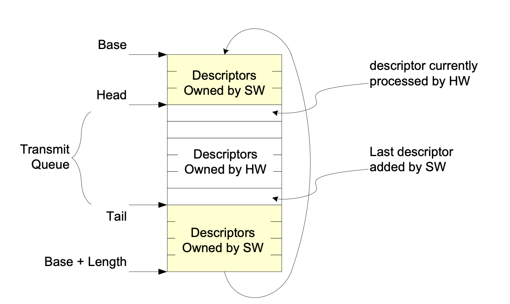

软硬件队列接口¶
背景¶
在网卡等场景下，经常会需要在软硬件之间传输大量的数据，通常的方法是建立循环队列，例如 H2C（Host to Chip）方向，是 Host 作为 Producer 增加数据到队尾，Chip 作为 Consumer 从队头读取数据。由于每次传输的数据不定长，为了方便，队列的项是一个定长的 Descriptor，Descriptor 指向了数据的地址。但具体的细节，不同的实现还不太一样。下面逐个案例进行分析。
AXI DMA¶
文档：https://docs.xilinx.com/r/en-US/pg021_axi_dma
如果在 Xilinx FPGA 上使用过以太网，那大概率会接触到 AXI DMA 这个 IP，它负责把以太网 MAC 的 AXI Stream 数据用 DMA 的形式通过内存来与操作系统交互。
发送队列¶
它的收和发各是一个队列，首先来看发送队列：
发送队列由一个头指针（MM2S_CURDESC）和一个尾指针定义（MM2S_TAILDESC），指针指向的是一个 Scatter Gather Descriptor，Descriptor 的内容包括：
- NXTDESC：队列下一项的地址
- BUFFER_ADDRESS：要传输的数据的地址
- CONTROL：控制信息
- STATUS：状态信息
- APP0 to APP4：附带的信息
可见这个发送队列实际上是一个链表：
当 MM2S_TAILDESC 被更新的时候，硬件会从 CURDESC 开始逐个 Descriptor 处理，直到遇到 TAILDESC 为止：
// when taildesc is changed
void taildesc_changed() {
do {
dma_send(curdesc);
if (curdesc != taildesc) {
curdesc = curdesc->nxtdesc;
}
} while (curdesc != taildesc);
}
所以，实际上是驱动不断地提供一个链表给 AXI DMA 去发送，至于这个链表是只有一个元素的数组，还是用一个循环队列去实现，都是可能的。
U-Boot¶
下面来看 U-Boot 的例子，驱动是 xilinx_axi_emac.c。这个驱动的实现很简单：每次需要发送的时候，只准备一个 Descriptor，发完就轮询直到发送成功。显然这个写法没有很好地利用 DMA 的异步特性，但胜在简单。下面是 axiemac_send 的部分源码：
static int axiemac_send(struct udevice *dev, void *ptr, int len) {
/* Setup Tx BD */
memset(&tx_bd, 0, sizeof(tx_bd));
/* At the end of the ring, link the last BD back to the top */
tx_bd.next_desc = lower_32_bits((unsigned long)&tx_bd);
tx_bd.next_desc_msb = upper_32_bits((unsigned long)&tx_bd);
tx_bd.buf_addr = lower_32_bits((unsigned long)ptr);
tx_bd.buf_addr_msb = upper_32_bits((unsigned long)ptr);
/* Save len */
tx_bd.cntrl = len | XAXIDMA_BD_CTRL_TXSOF_MASK |
XAXIDMA_BD_CTRL_TXEOF_MASK;
axienet_dma_write(&tx_bd, &priv->dmatx->current);
u32 temp;
/* Start the hardware */
temp = readl(&priv->dmatx->control);
temp |= XAXIDMA_CR_RUNSTOP_MASK;
writel(temp, &priv->dmatx->control);
/* Start transfer */
axienet_dma_write(&tx_bd, &priv->dmatx->tail);
/* Wait for transmission to complete */
debug("axiemac: Waiting for tx to be done\n");
timeout = 200;
while (timeout && (!(readl(&priv->dmatx->status) &
(XAXIDMA_IRQ_DELAY_MASK | XAXIDMA_IRQ_IOC_MASK)))) {
timeout--;
udelay(1);
}
}
Linux¶
再来看 Linux 的 驱动：xilinx_axienet_main.c。它采取的方法是分配一个 Descriptor 数组，然后把数组的每一项都指向下一项（最后一项指向第一项），形成一个链表形式的循环队列，维护一个尾指针。下面是初始化代码：
static int axienet_dma_bd_init(struct net_device *ndev) {
/* Allocate the Tx and Rx buffer descriptors. */
lp->tx_bd_v = dma_alloc_coherent(lp->dev,
sizeof(*lp->tx_bd_v) * lp->tx_bd_num,
&lp->tx_bd_p, GFP_KERNEL);
for (i = 0; i < lp->tx_bd_num; i++) {
dma_addr_t addr = lp->tx_bd_p +
sizeof(*lp->tx_bd_v) *
((i + 1) % lp->tx_bd_num);
lp->tx_bd_v[i].next = lower_32_bits(addr);
lp->tx_bd_v[i].next_msb = upper_32_bits(addr);
}
/* Write to the RS (Run-stop) bit in the Tx channel control register.
* Tx channel is now ready to run. But only after we write to the
* tail pointer register that the Tx channel will start transmitting.
*/
axienet_dma_out_addr(lp, XAXIDMA_TX_CDESC_OFFSET, lp->tx_bd_p);
lp->tx_dma_cr |= XAXIDMA_CR_RUNSTOP_MASK;
axienet_dma_out32(lp, XAXIDMA_TX_CR_OFFSET, lp->tx_dma_cr);
}
初始化好了以后，每当要发送数据的时候，就写入 tail 指针指向的 Descriptor，然后增加 tail 指针，同时告诉硬件开始 DMA：
static netdev_tx_t
axienet_start_xmit(struct sk_buff *skb, struct net_device *ndev) {
u32 num_frag = skb_shinfo(skb)->nr_frags;
if (axienet_check_tx_bd_space(lp, num_frag + 1)) {
return NETDEV_TX_BUSY;
}
phys = dma_map_single(lp->dev, skb->data,
skb_headlen(skb), DMA_TO_DEVICE);
desc_set_phys_addr(lp, phys, cur_p);
cur_p->cntrl = skb_headlen(skb) | XAXIDMA_BD_CTRL_TXSOF_MASK;
for (ii = 0; ii < num_frag; ii++) {
if (++new_tail_ptr >= lp->tx_bd_num)
new_tail_ptr = 0;
cur_p = &lp->tx_bd_v[new_tail_ptr];
frag = &skb_shinfo(skb)->frags[ii];
phys = dma_map_single(lp->dev,
skb_frag_address(frag),
skb_frag_size(frag),
DMA_TO_DEVICE);
desc_set_phys_addr(lp, phys, cur_p);
cur_p->cntrl = skb_frag_size(frag);
}
cur_p->cntrl |= XAXIDMA_BD_CTRL_TXEOF_MASK;
cur_p->skb = skb;
tail_p = lp->tx_bd_p + sizeof(*lp->tx_bd_v) * new_tail_ptr;
if (++new_tail_ptr >= lp->tx_bd_num)
new_tail_ptr = 0;
WRITE_ONCE(lp->tx_bd_tail, new_tail_ptr);
/* Start the transfer */
axienet_dma_out_addr(lp, XAXIDMA_TX_TDESC_OFFSET, tail_p);
}
实现思路：
- 检查是否有足够的空闲 Descriptor
- 对于要发送的数据的每一段，都填入一个 Descriptor
- 写入新的 tail 指针，启动 DMA
那么，又有一个问题：如何知道硬件完成了 DMA 传输，释放了 Descriptor 呢？答案是，AXI DMA 传输完成时，会通过中断通知 CPU，Linux 最终会调用 axienet_free_tx_chain 函数：
static int axienet_free_tx_chain(struct axienet_local *lp, u32 first_bd,
int nr_bds, bool force, u32 *sizep, int budget) {
struct axidma_bd *cur_p;
unsigned int status;
dma_addr_t phys;
int i;
for (i = 0; i < nr_bds; i++) {
cur_p = &lp->tx_bd_v[(first_bd + i) % lp->tx_bd_num];
status = cur_p->status;
/* If force is not specified, clean up only descriptors
* that have been completed by the MAC.
*/
if (!force && !(status & XAXIDMA_BD_STS_COMPLETE_MASK))
break;
/* Ensure we see complete descriptor update */
dma_rmb();
phys = desc_get_phys_addr(lp, cur_p);
dma_unmap_single(lp->dev, phys,
(cur_p->cntrl & XAXIDMA_BD_CTRL_LENGTH_MASK),
DMA_TO_DEVICE);
if (cur_p->skb && (status & XAXIDMA_BD_STS_COMPLETE_MASK))
napi_consume_skb(cur_p->skb, budget);
cur_p->app0 = 0;
cur_p->app1 = 0;
cur_p->app2 = 0;
cur_p->app4 = 0;
cur_p->skb = NULL;
/* ensure our transmit path and device don't prematurely see status cleared */
wmb();
cur_p->cntrl = 0;
cur_p->status = 0;
}
return i;
}
从代码来看，其实也很简单：AXI DMA 传输完成后，会设置 status 的内容，标记已经传输完成。这时候只要从最后一次完成传输的 Descriptor 开始扫描，把所有完成传输的 Descriptor 回收即可。
接收队列¶
接收队列结构与发送队列相似，但不同的是，生产者和消费者的角色对调，驱动为了保证随时可以接收数据，需要预先准备好 Descriptor，当 AXI DMA 从以太网 MAC 收到数据的时候，随时有 Descriptor 可以使用，写入数据后，再通知 CPU。和发送队列一样，接收队列由一个头指针（S2MM_CURDESC）和一个尾指针定义（S2MM_TAILDESC），指针指向的 Descriptor 结构与发送队列一致。硬件的接收逻辑和发送逻辑类似，只不过方向相反。
U-Boot¶
首先还是来看 U-Boot 的实现。前面提到，为了简化，U-Boot 的网卡驱动每次同时只会发送一个帧，接收的时候其实也一样：
(some net operation (ping / tftp / whatever...))
eth_init()
ops->start()
eth_send()
ops->send()
eth_rx()
ops->recv()
(process packet)
if (ops->free_pkt)
ops->free_pkt()
eth_halt()
ops->stop()
首先看 AXI EMAC 驱动如何初始化接收队列：
static u8 rxframe[PKTSIZE_ALIGN] __attribute((aligned(DMAALIGN)));
static int axiemac_start(struct udevice *dev) {
/* Start DMA RX channel. Now it's ready to receive data.*/
axienet_dma_write(&rx_bd, &priv->dmarx->current);
/* Setup the BD. */
memset(&rx_bd, 0, sizeof(rx_bd));
rx_bd.next_desc = lower_32_bits((unsigned long)&rx_bd);
rx_bd.next_desc_msb = upper_32_bits((unsigned long)&rx_bd);
rx_bd.buf_addr = lower_32_bits((unsigned long)&rxframe);
rx_bd.buf_addr_msb = upper_32_bits((unsigned long)&rxframe);
rx_bd.cntrl = sizeof(rxframe);
/* Flush the last BD so DMA core could see the updates */
flush_cache((phys_addr_t)&rx_bd, sizeof(rx_bd));
/* It is necessary to flush rxframe because if you don't do it
* then cache can contain uninitialized data */
flush_cache((phys_addr_t)&rxframe, sizeof(rxframe));
/* Start the hardware */
temp = readl(&priv->dmarx->control);
temp |= XAXIDMA_CR_RUNSTOP_MASK;
writel(temp, &priv->dmarx->control);
/* Rx BD is ready - start */
axienet_dma_write(&rx_bd, &priv->dmarx->tail);
}
可以看到它只初始化了一个 Descriptor，并且把 CURDESC 和 TAILDESC 都指向它，并且提供了一个缓冲区 rxframe。当 AXI DMA 接收到数据的时候，就会把数据写入 rxframe，更新 rx_bd 并发送中断。U-Boot 处理中断的方法也很简单：
static int axiemac_recv(struct udevice *dev, int flags, uchar **packetp) {
/* Disable IRQ for a moment till packet is handled */
temp = readl(&priv->dmarx->control);
temp &= ~XAXIDMA_IRQ_ALL_MASK;
writel(temp, &priv->dmarx->control);
length = rx_bd.status & XAXIDMA_BD_STS_ACTUAL_LEN_MASK;
*packetp = rxframe;
return length;
}
它关闭了 AXI DMA 的中断，然后直接读取长度，把 rxframe 作为数据指针传给网络栈处理的函数。网络栈处理完以后，就会调用 free_pkt 进行收尾：
static int axiemac_free_pkt(struct udevice *dev, uchar *packet, int length) {
#ifdef DEBUG
/* It is useful to clear buffer to be sure that it is consistent */
memset(rxframe, 0, sizeof(rxframe));
#endif
/* Setup RxBD */
/* Clear the whole buffer and setup it again - all flags are cleared */
memset(&rx_bd, 0, sizeof(rx_bd));
rx_bd.next_desc = lower_32_bits((unsigned long)&rx_bd);
rx_bd.next_desc_msb = upper_32_bits((unsigned long)&rx_bd);
rx_bd.buf_addr = lower_32_bits((unsigned long)&rxframe);
rx_bd.buf_addr_msb = upper_32_bits((unsigned long)&rxframe);
rx_bd.cntrl = sizeof(rxframe);
/* Write bd to HW */
flush_cache((phys_addr_t)&rx_bd, sizeof(rx_bd));
/* It is necessary to flush rxframe because if you don't do it
* then cache will contain previous packet */
flush_cache((phys_addr_t)&rxframe, sizeof(rxframe));
/* Rx BD is ready - start again */
axienet_dma_write(&rx_bd, &priv->dmarx->tail);
}
收尾工作也很简单，把接收队列恢复到可以接收数据的状态即可，因为 rxframe 是全局变量，也不需要进行 free。
Linux¶
Linux 的驱动实现里，接收队列和发送队列类似，也是用一个数组来实现循环链表，只不过接收队列还需要提前准备好缓冲区，供 AXI DMA 写入：
static int axienet_dma_bd_init(struct net_device *ndev) {
lp->rx_bd_v = dma_alloc_coherent(lp->dev,
sizeof(*lp->rx_bd_v) * lp->rx_bd_num,
&lp->rx_bd_p, GFP_KERNEL);
for (i = 0; i < lp->rx_bd_num; i++) {
dma_addr_t addr;
addr = lp->rx_bd_p + sizeof(*lp->rx_bd_v) *
((i + 1) % lp->rx_bd_num);
lp->rx_bd_v[i].next = lower_32_bits(addr);
lp->rx_bd_v[i].next_msb = upper_32_bits(addr);
skb = netdev_alloc_skb_ip_align(ndev, lp->max_frm_size);
lp->rx_bd_v[i].skb = skb;
addr = dma_map_single(lp->dev, skb->data,
lp->max_frm_size, DMA_FROM_DEVICE);
desc_set_phys_addr(lp, addr, &lp->rx_bd_v[i]);
lp->rx_bd_v[i].cntrl = lp->max_frm_size;
}
/* Populate the tail pointer and bring the Rx Axi DMA engine out of
* halted state. This will make the Rx side ready for reception.
*/
axienet_dma_out_addr(lp, XAXIDMA_RX_CDESC_OFFSET, lp->rx_bd_p);
lp->rx_dma_cr |= XAXIDMA_CR_RUNSTOP_MASK;
axienet_dma_out32(lp, XAXIDMA_RX_CR_OFFSET, lp->rx_dma_cr);
axienet_dma_out_addr(lp, XAXIDMA_RX_TDESC_OFFSET, lp->rx_bd_p +
(sizeof(*lp->rx_bd_v) * (lp->rx_bd_num - 1)));
}
可以看到，数组的每一项的指针指向下一项，然后把头地址写入 CURDESC，尾地址写入 TAILDESC，这样硬件就可以开始接收数据。AXI DMA 收到数据以后，会把数据写入 Descriptor 指向的缓冲区地址，然后发送中断，Linux 执行下列代码处理中断：
static int axienet_rx_poll(struct napi_struct *napi, int budget) {
cur_p = &lp->rx_bd_v[lp->rx_bd_ci];
while (packets < budget && (cur_p->status & XAXIDMA_BD_STS_COMPLETE_MASK)) {
dma_addr_t phys;
/* Ensure we see complete descriptor update */
dma_rmb();
skb = cur_p->skb;
cur_p->skb = NULL;
/* skb could be NULL if a previous pass already received the
* packet for this slot in the ring, but failed to refill it
* with a newly allocated buffer. In this case, don't try to
* receive it again.
*/
if (likely(skb)) {
length = cur_p->app4 & 0x0000FFFF;
phys = desc_get_phys_addr(lp, cur_p);
dma_unmap_single(lp->dev, phys, lp->max_frm_size,
DMA_FROM_DEVICE);
skb_put(skb, length);
skb->protocol = eth_type_trans(skb, lp->ndev);
napi_gro_receive(napi, skb);
size += length;
packets++;
}
new_skb = napi_alloc_skb(napi, lp->max_frm_size);
phys = dma_map_single(lp->dev, new_skb->data,
lp->max_frm_size,
DMA_FROM_DEVICE);
desc_set_phys_addr(lp, phys, cur_p);
cur_p->cntrl = lp->max_frm_size;
cur_p->status = 0;
cur_p->skb = new_skb;
/* Only update tail_p to mark this slot as usable after it has
* been successfully refilled.
*/
tail_p = lp->rx_bd_p + sizeof(*lp->rx_bd_v) * lp->rx_bd_ci;
if (++lp->rx_bd_ci >= lp->rx_bd_num)
lp->rx_bd_ci = 0;
cur_p = &lp->rx_bd_v[lp->rx_bd_ci];
}
if (tail_p)
axienet_dma_out_addr(lp, XAXIDMA_RX_TDESC_OFFSET, tail_p);
}
可以看到，接收逻辑顺序扫描了 Descriptor，找到那些传输完成的，把其中的数据交给网络栈处理，然后分配一个新的 skb，绑定到 Descriptor 上，把它恢复到可以接收数据的状态，最后更新 TAILDESC。
小结¶
AXI DMA 提供了一个 Descriptor 链来异步地传输数据，U-Boot 为了简化，把链表退化成只有一个节点，串行地收和发；Linux 使用数组实现了一个循环的链表，通过 TAILDESC 提供新的 Descriptor，然后从 CURDESC 回收 Descriptor。Descriptor 不断在硬件和软件之间交替，CURDESC 到 TAILDESC 的部分归硬件，其余的归软件。这种设计模式在其他很多地方也可以看到。
Intel 82599¶
Intel 82599 是一个有线网卡，Linux 的驱动是 ixgbe。Intel 82599 为收和发都提供了多个队列，每个队列都对应了一个 Descriptor 数组，在内存中连续存放。Linux 驱动使用了 64 个接收队列和发送队列。
文档链接：https://cdrdv2-public.intel.com/331520/82599-datasheet-v3-4.pdf
接收队列¶
和 AXI DMA 的链表形式不同。每个接收队列都由如下的寄存器定义：
- RDBAL/RDBAH[n]: Receive Descriptor Base Address Low/High
- RDLEN[n]: Receive Descriptor Length
- RDH[n]: Receive Descriptor Head
- RDT[n]: Receive Descriptor Tail
由基地址 + 长度定义了一个循环队列，然后从 Head 到 Tail 的部分是当前有效的队列，软件从 Tail 插入新的 Descriptor，硬件从 Head 取 Descriptor。当 Head 等于 Tail 的时候，队列是空的，也就是说 Tail 表示的是合法的下一个，这样队列满的时候 Tail + 1 == Head。
ixgbe 的实现代码在 ixgbe_main.c 中，首先看如何初始化接收队列：
static void ixgbe_configure_rx(struct ixgbe_adapter *adapter) {
/*
* Setup the HW Rx Head and Tail Descriptor Pointers and
* the Base and Length of the Rx Descriptor Ring
*/
for (i = 0; i < adapter->num_rx_queues; i++)
ixgbe_configure_rx_ring(adapter, adapter->rx_ring[i]);
}
void ixgbe_configure_rx_ring(struct ixgbe_adapter *adapter,
struct ixgbe_ring *ring) {
u64 rdba = ring->dma;
IXGBE_WRITE_REG(hw, IXGBE_RDBAL(reg_idx), (rdba & DMA_BIT_MASK(32)));
IXGBE_WRITE_REG(hw, IXGBE_RDBAH(reg_idx), (rdba >> 32));
IXGBE_WRITE_REG(hw, IXGBE_RDLEN(reg_idx),
ring->count * sizeof(union ixgbe_adv_rx_desc));
IXGBE_WRITE_REG(hw, IXGBE_RDH(reg_idx), 0);
IXGBE_WRITE_REG(hw, IXGBE_RDT(reg_idx), 0);
ring->tail = adapter->io_addr + IXGBE_RDT(reg_idx);
/* enable receive descriptor ring */
rxdctl |= IXGBE_RXDCTL_ENABLE;
IXGBE_WRITE_REG(hw, IXGBE_RXDCTL(reg_idx), rxdctl);
/* in ixgbe_alloc_rx_buffers */
bufsz = ixgbe_rx_bufsz(rx_ring);
do {
if (!ixgbe_alloc_mapped_page(rx_ring, bi))
break;
/* sync the buffer for use by the device */
dma_sync_single_range_for_device(rx_ring->dev, bi->dma,
bi->page_offset, bufsz,
DMA_FROM_DEVICE);
/*
* Refresh the desc even if buffer_addrs didn't change
* because each write-back erases this info.
*/
rx_desc->read.pkt_addr = cpu_to_le64(bi->dma + bi->page_offset);
rx_desc++;
/* clear the length for the next_to_use descriptor */
rx_desc->wb.upper.length = 0;
cleaned_count--;
} while (cleaned_count);
writel(i, rx_ring->tail);
}
具体到实现上，可以看到和 AXI DMA 驱动基本是一样的：分配 Descriptor 数组空间，然后给每个 Descriptor 分配一个 Buffer，然后更新 tail 指针，让硬件可以开始进行接收。
发送队列¶
发送队列和接收队列类似，也是先分配好 Descriptor 数组，只不过先不填内容，等到要发送数据的时候，再从 tail 取出一个 Descriptor，写入 buffer 地址，然后更新 tail 指针让硬件发送。代码：
netdev_tx_t ixgbe_xmit_frame_ring(struct sk_buff *skb,
struct ixgbe_adapter *adapter,
struct ixgbe_ring *tx_ring) {
/* record the location of the first descriptor for this packet */
first = &tx_ring->tx_buffer_info[tx_ring->next_to_use];
first->skb = skb;
first->bytecount = skb->len;
/* in ixgbe_tx_map */
dma = dma_map_single(tx_ring->dev, skb->data, size, DMA_TO_DEVICE);
for (frag = &skb_shinfo(skb)->frags[0];; frag++) {
if (dma_mapping_error(tx_ring->dev, dma))
goto dma_error;
/* record length, and DMA address */
dma_unmap_len_set(tx_buffer, len, size);
dma_unmap_addr_set(tx_buffer, dma, dma);
tx_desc->read.buffer_addr = cpu_to_le64(dma);
while (unlikely(size > IXGBE_MAX_DATA_PER_TXD)) {
tx_desc->read.cmd_type_len =
cpu_to_le32(cmd_type ^ IXGBE_MAX_DATA_PER_TXD);
i++;
tx_desc++;
if (i == tx_ring->count) {
tx_desc = IXGBE_TX_DESC(tx_ring, 0);
i = 0;
}
tx_desc->read.olinfo_status = 0;
dma += IXGBE_MAX_DATA_PER_TXD;
size -= IXGBE_MAX_DATA_PER_TXD;
tx_desc->read.buffer_addr = cpu_to_le64(dma);
}
tx_desc->read.cmd_type_len = cpu_to_le32(cmd_type ^ size);
i++;
tx_desc++;
if (i == tx_ring->count) {
tx_desc = IXGBE_TX_DESC(tx_ring, 0);
i = 0;
}
tx_desc->read.olinfo_status = 0;
size = skb_frag_size(frag);
data_len -= size;
dma = skb_frag_dma_map(tx_ring->dev, frag, 0, size,
DMA_TO_DEVICE);
tx_buffer = &tx_ring->tx_buffer_info[i];
}
i++;
if (i == tx_ring->count)
i = 0;
tx_ring->next_to_use = i;
ixgbe_maybe_stop_tx(tx_ring, DESC_NEEDED);
if (netif_xmit_stopped(txring_txq(tx_ring)) || !netdev_xmit_more()) {
writel(i, tx_ring->tail);
}
}
这一段代码的思路是，对于 skb 的每个 frag，尝试填入 Descriptor，如果发现填不下，就填多个，直到填完位置，最后更新 tail 指针，让硬件开始发送。
小结¶
在了解 AXI DMA 的工作原理的基础上，Intel 82599 的队列其实也不复杂，只不过直接采取了以 Descriptor 数组作为循环队列的方式，并且这里归属于硬件的 Descriptor 空间其实是 [Head, Tail) 左闭右开区间的形式（AXI DMA 是链表的头和尾，都属于硬件），这样就可以用 Head == Tail 来表示空队列，当然了，队列也永远会差一项才能满（除非额外记录队列中合法元素个数）。最后贴一张 Intel 82599 Datasheet 中的图片来帮助理解：

ConnectX-4¶
接下来看看 ConnectX-4 是如何设计它的各个队列的。首先，它有 Work Queue，用于发送数据（Send Queue）和准备接收数据的缓冲区（Receive Queue），然后硬件处理 Work Queue 中的 Entry 后，就会把结果写入到 Completion Queue，并且通过 Event Queue 通知 CPU。
文档：https://network.nvidia.com/files/doc-2020/ethernet-adapters-programming-manual.pdf
Work Queue¶
Work Queue 和前面 Intel 82599 的设计很像，也是一个 Descriptor 的数组的形式，只不过 Work Queue Entry 是不定长的，支持不同的 Entry Format，例如 Send WQE、Receive WQE 和 Shared Receive WQE。
驱动初始化的时候，创建好 Work Queue：
static int mlx5e_open_queues(struct mlx5e_channel *c,
struct mlx5e_params *params,
struct mlx5e_channel_param *cparam) {
err = mlx5e_open_sqs(c, params, cparam);
err = mlx5e_open_rxq_rq(c, params, &cparam->rq);
}
之后，和 Intel 82599 类似，发送的时候就向 Send Queue 插入 Entry，然后更新 Doorbell 让硬件开始发送；为了接收，先分配好缓冲区，初始化 Receive Queue，更新 Doorbell 让硬件开始接收数据。
Completion Queue¶
和 Intel 82599 不同的是，这里表示项目完成是通过 Completion Queue 完成的，也就是说，硬件会向 Completion Queue 插入一项，来表示对应的 Work Queue Entry 完成情况。这样的设计下，Work Queue 完全由软件写入，Completion Queue 完全由硬件写入，不像前面 AXI DMA 和 Intel 82599 那样硬件会更新 Descriptor 里面的状态位。Completion Queue 也有两个 Counter，相当于队列的头和尾指针：Producer Counter 记录了硬件写入的 Completion Queue Entry（CQE）数量，Consumer Counter 记录了软件已经处理了的 CQE 数量。在这里有一个比较有意思的设计：
ownership cqe_ownership(cqe) {
if (cqe.owner == ((consumer_counter >> log2_cq_size) & 1)) {
return SW ownership
} else {
return HW ownership
}
}
可以看到，它根据 consumer_counter 的当前值的高位（mask 掉 CQ 大小对应的 bits）与 CQE 的 owner 字段进行比对，如果相等，就认为是属于软件；否则则是属于硬件。软件在轮询的时候，只有遇到 SW ownership 的 CQE 才会处理，否则就忽略。乍一看，这个设计挺奇怪的，因为溢出的问题，((consumer_counter >> log2_cq_size) & 1) 每次溢出就会取反，所以相应的 ownership 的对应关系也会取反。回想一下，之前 AXI DMA 的做法，接收的时候，软件设置一个状态位，硬件完成接收以后，也设置一个状态位，软件完成处理以后，再恢复状态位为可以接收的状态，这样来回操作比较麻烦。在 ConnectX-4 的这种设计下，硬件只需要在填 CQE 的时候，toggle 一下 owner 位即可，软件不需要修改内容，只需要修改 consumer_counter。
这样看可能比较迷糊，来拆解一下整个过程。首先是 AXI DMA 的接收队列的 Descriptor 的处理：
- 软件设置 status = 0 表示这个 Descriptor 可以接收
- 硬件设置 status |= COMPLETED
- 软件读取 status 发现 COMPLETED，处理数据，然后重新设置 status = 0
可以看到，Descriptor 的内容是软件和硬件来回修改。ConnectX-4 的设计下，软件不需要对 CQE 做任何修改：
- 初始情况下，owner = 1 和 consumer_counter = 0，对应 HW owner，所以软件不会认为是合法的 CQE
- 硬件开始向 CQ 插入 CQE，此时 owner ^=1 变为 0，对应 SW owner，所以软件可以开始读取并处理 CQE
- 硬件不断插入，出现了第一次溢出，软件跟着处理，也第一次溢出了，此时
((consumer_counter >> log2_cq_size) & 1) = 1，此时 1 对应 SW owner，0 对应 HW owner。当硬件插入 CQE 以后，owner 才从 0（HW owner）又变回 1（SW owner），软件就知道，可以继续读取并处理 CQE - 这个过程继续下去，owner 的含义不断翻转
可以看到，整个过程软件不需要写入 CQE 的内容，只需要不断轮询并更新 consumer_counter。硬件实现也很简单，不断地对 owner 进行异或，就实现了通知软件的功能。这就类似于，每当 counter 溢出的时候，就自动“清空”所有 CQE 的“valid”位，然后硬件再设置“valid = 1”。硬件只需要保证 producer_counter 不会追上 consumer_counter 就可以了，硬件也不需要去读取 CQE 的内容来判断软件是否处理完成。这个方式还是比较有意思的。
static void *get_sw_cqe(struct mlx5_ib_cq *cq, int n)
{
void *cqe = get_cqe(cq, n & cq->ibcq.cqe);
struct mlx5_cqe64 *cqe64;
cqe64 = (cq->mcq.cqe_sz == 64) ? cqe : cqe + 64;
if (likely(get_cqe_opcode(cqe64) != MLX5_CQE_INVALID) &&
!((cqe64->op_own & MLX5_CQE_OWNER_MASK) ^ !!(n & (cq->ibcq.cqe + 1)))) {
return cqe;
} else {
return NULL;
}
}
实际上，写这篇博客就是因为有同学看到了 CQE 的 owner 的奇怪设定，我才来研究的这个问题。我就是为了这点醋，才包的这顿饺子，前面做了一大堆的引入。
ChatGPT 时间¶
问：What does network driver do to send/receive network packets to/from NIC?
答：A network driver is a software component that allows the operating system to communicate with the network interface card (NIC) and send and receive network packets. The NIC is a hardware device that connects a computer to a network and enables it to communicate with other devices on that network.
When the computer wants to send a network packet, the operating system hands the packet off to the network driver, which then converts it into a format that the NIC can understand. The network driver also sets the appropriate control bits and headers in the packet to ensure that it is correctly transmitted over the network.
When a network packet is received by the NIC, the network driver intercepts it and passes it on to the operating system. The network driver then verifies the packet's integrity, checks if it is destined for the local machine, and if so, hands it over to the appropriate application.
In summary, the network driver acts as a bridge between the operating system and the NIC, enabling the computer to send and receive network packets over the network.
问：Can you give me a detailed description? e.g. the ring buffer and notification mechanism
答：Sure, I can provide a more detailed description of how network drivers use ring buffers and notification mechanisms to send and receive network packets.
A ring buffer is a circular buffer that is used by the network driver to store incoming and outgoing network packets. The buffer is divided into multiple sections or "rings," each of which can hold one or more packets. The ring buffer is used to manage the flow of data between the network driver and the NIC.
When a packet is received by the NIC, it is stored in the receive ring buffer. The network driver then reads the packet from the ring buffer, processes it, and hands it over to the appropriate application.
When the computer wants to send a packet, the network driver first checks if there is space available in the transmit ring buffer. If there is, it writes the packet to the next available slot in the buffer and sets the appropriate control bits and headers.
The network driver then uses a notification mechanism to inform the NIC that there is data available in the transmit ring buffer. This notification mechanism can take different forms, depending on the specific hardware and driver implementation. For example, it might involve writing to a specific memory location or sending an interrupt signal to the NIC.
注：没听说过给 NIC 发送中断。
When the NIC receives the notification, it reads the packet from the transmit ring buffer and sends it over the network.
The ring buffer and notification mechanisms are critical components of network drivers because they enable efficient communication between the operating system and the NIC. By using a circular buffer, the driver can handle multiple packets at once and avoid the need for expensive memory allocations or deallocations. The notification mechanism allows the driver to inform the NIC of data availability without constantly polling the buffer, which would waste CPU cycles and reduce system performance.
注：这里说反了，应该是告诉网卡驱动有数据可用。
问：Can you take Xilinx AXI DMA for example?
答：Sure, let me provide an example of how the Xilinx AXI DMA uses a ring buffer and notification mechanism to send and receive network packets.
The Xilinx AXI DMA is a DMA controller that is commonly used in embedded systems to handle data transfers between a host processor and peripherals, including network interfaces. The AXI DMA uses a scatter-gather DMA engine, which means it can transfer data between non-contiguous memory regions.
In the context of network communication, the AXI DMA is typically used to transfer packets between the network interface card and the host memory. The AXI DMA driver sets up a ring buffer in host memory that is used to store incoming and outgoing packets.
When a packet is received by the NIC, it is stored in a receive ring buffer that is allocated in the host memory. The AXI DMA driver sets up the receive ring buffer and configures the AXI DMA to use it as the destination for incoming packets.
To enable the notification mechanism, the AXI DMA driver configures the AXI DMA to generate an interrupt when a packet is received and stored in the receive ring buffer. The interrupt is sent to the host processor, which then reads the packet from the receive ring buffer and processes it.
When the host processor wants to send a packet, it writes the packet data to a transmit ring buffer that is also allocated in host memory. The AXI DMA driver sets up the transmit ring buffer and configures the AXI DMA to use it as the source for outgoing packets.
To enable the notification mechanism for outgoing packets, the AXI DMA driver configures the AXI DMA to generate an interrupt when the transmit ring buffer is empty and ready to accept a new packet. This interrupt is sent to the host processor, which then writes the next packet to the transmit ring buffer.
The AXI DMA driver manages the ring buffers and interrupt handling to ensure that incoming and outgoing packets are processed efficiently and without data loss.
In summary, the Xilinx AXI DMA uses a ring buffer and notification mechanism to enable efficient transfer of network packets between the NIC and the host memory. The ring buffer is used to manage the flow of incoming and outgoing packets, while the notification mechanism enables the DMA engine to inform the host processor when new data is available or when the buffer is ready to accept new data.
问：How about Intel 82599? What's the difference between Intel 82599 and AXI DMA?
答：The Intel 82599 is a high-performance Ethernet controller that is commonly used in data center and cloud computing environments. Like the AXI DMA, the Intel 82599 also uses a ring buffer and notification mechanism to send and receive network packets.
However, there are some key differences between the Intel 82599 and the AXI DMA. The most significant difference is that the Intel 82599 is a hardware-based Ethernet controller, while the AXI DMA is a DMA controller that is typically used in embedded systems.
As a hardware-based Ethernet controller, the Intel 82599 is optimized for high-speed data transfer and advanced networking features. It includes hardware offloading capabilities that can offload tasks such as TCP/IP checksum calculation, packet segmentation, and packet filtering from the host CPU. This offloading reduces the CPU load and improves overall system performance.
The Intel 82599 uses multiple receive and transmit ring buffers to support parallel data processing and enable high-speed data transfer. The receive ring buffers are used to store incoming packets, while the transmit ring buffers are used to store outgoing packets.
The notification mechanism used by the Intel 82599 is called Interrupt Moderation. This mechanism is used to reduce the number of interrupts generated by the Ethernet controller and improve system efficiency. Interrupt Moderation groups multiple network packets together and generates a single interrupt to notify the host CPU that the packets are ready to be processed.
In summary, the Intel 82599 and the AXI DMA both use ring buffers and notification mechanisms to transfer network packets, but they differ in their design and application. The Intel 82599 is a high-performance Ethernet controller that is optimized for data center and cloud computing environments, while the AXI DMA is a DMA controller that is typically used in embedded systems. The Intel 82599 includes advanced networking features such as hardware offloading and Interrupt Moderation, which improve system performance and efficiency.